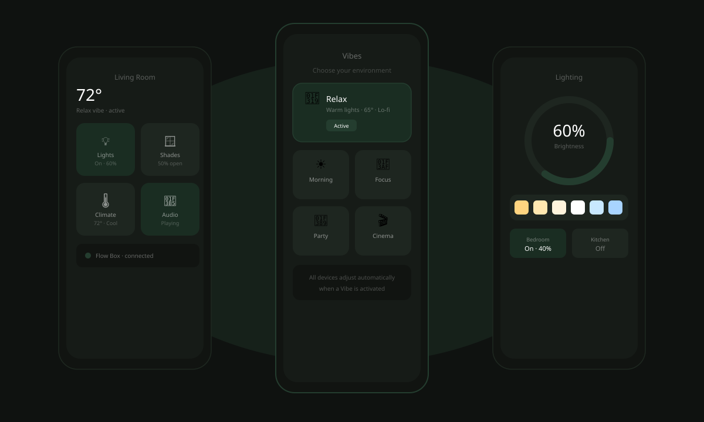
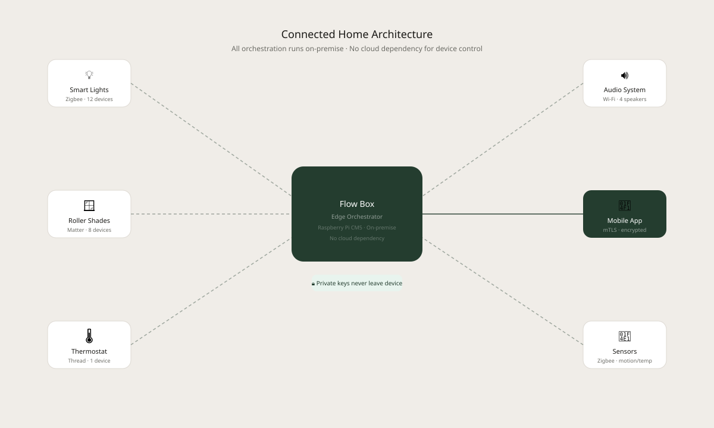
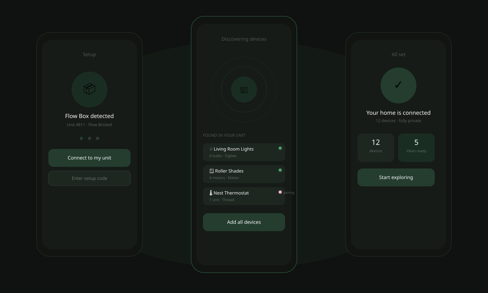
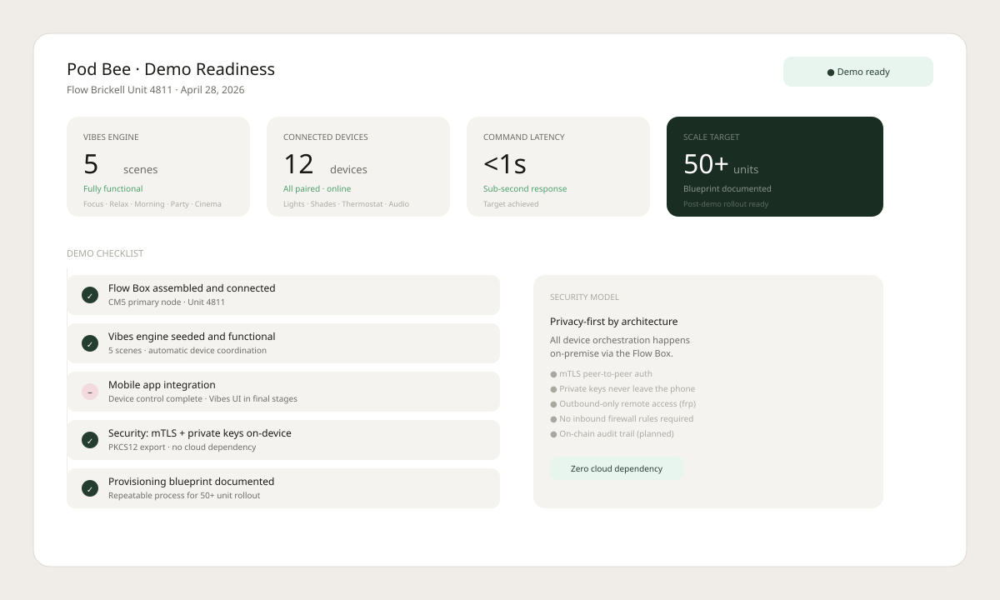

Product Design · iOS, Android · 2026
A smart home that stays
out of the way

Overview
One app. Every device. No cloud required.
Pod Bee is an initiative within Flow's Connected Experience (C-XP) program — a privacy-first, edge-orchestrated smart living platform built for residential properties. The core hardware is the Flow Box: a custom encrypted edge device that orchestrates all smart devices in an apartment entirely on-premise, invisible to residents but responsive to their every need.
The design challenge was significant: residents shouldn't need to think about IoT standards, device pairing, or privacy architecture. They should simply walk into a room and have their environment respond. That meant hiding the complexity of Matter, Zigbee, and Thread integrations behind an interface that felt as simple as adjusting a thermostat.
The target: zero to fully connected in under two minutes, with sub-second command latency across all devices.

Problem
Every device, a different app
Residents at Flow properties were managing their living environment across a fragmented collection of disconnected apps and physical switches — one for lights, another for shades, another for the thermostat. There was no unified control surface, no way to set a mood across devices at once, and no concept of a "home" state.
Behind the scenes, the technical complexity was equally fragmented. Multiple IoT standards (Matter, Zigbee, Thread) needed to interoperate securely without exposing resident data to the cloud. Any solution had to be scalable from a single demo unit to 50+ apartments without requiring bespoke configuration for each one.
01
Fragmented Control
Residents used disconnected apps or physical switches for each device type, creating a disjointed and frustrating experience with no unified home view.
02
Privacy & Security
Device control and data aggregation needed to stay fully private — strong peer-to-peer authentication with no cloud dependency for sensitive operations.
03
Scale
A single demo unit needed to serve as a repeatable blueprint — provisioning and configuration had to be documented for a 50+ unit commercial rollout.

Solution
Vibes: scene-based living
The central design concept was Vibes — a set of curated scenes (Focus, Relax, Morning, Party, Cinema) that coordinate every device in an apartment simultaneously. Activating a Vibe adjusts lighting levels and color temperature, opens or closes shades, sets the thermostat, and queues appropriate audio — all with a single tap and sub-second execution.
Beneath Vibes, manual device control gives residents granular access when they need it. The interface was modeled after the simplicity of Venmo and Apple's Home app — familiar patterns that required no onboarding. The Flow Box itself is entirely invisible: it runs a containerized API on a Raspberry Pi CM5, communicates via mTLS with private keys that never leave the user's device, and connects remotely through outbound-only tunneling that requires no inbound firewall configuration.
Onboarding was designed to get residents from zero to fully connected in under two minutes — automatic device discovery, one-tap pairing, and instant Vibe availability from the moment setup completes.

Outcome
Demo-ready. Blueprint for scale.
By April 2026, the Flow Box for Unit 4811 at Flow Brickell was fully assembled and connected. The Vibes engine launched with five foundational scenes, all hardware was paired and online, and the security model — mTLS authentication with private keys remaining on-device, zero cloud dependency — was fully validated.
The provisioning and configuration process was documented as a repeatable blueprint for the planned 50+ unit post-demo rollout, with an expanded QA team, improved CI/CD pipelines, and AI-assisted documentation tooling in place. The April 28 stakeholder demo set the criteria: end-to-end device control, proactive Vibe triggering, and sub-second command latency — all met.